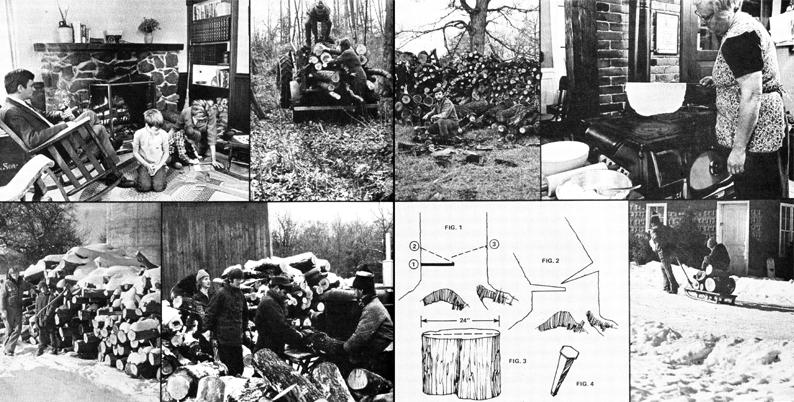

Of all the "alternative" sources of energy available to the "little guy", wood is probably the easiest to understand and use. As well it should be. After all, mankind has been burning wood for a lot more years than it has been building solar collectors, setting up windplants, or tinkering with waterwheels.
And there's something so deep-down satisfying about stretching out in front of a roaring fireplace or a fully stoked wood-burning stove on a long, dark, icy, wind-swept winter's evening. Wood heat, besides being such a readily available low-technology source of energy, is just plain enjoyable!
And that's why we're featuring wood and wood-burners in this and the next two issues of this magazine. The six pages you see here should set the proper tone for the more extensive information on the subject that you'll find in MOTH ERs 48 and 49.-The Editors.
Scenes from the past? Yes and no. There was a time when country folks all over this continenet cut and split their own wood for heating and cooking as a matter of course.Then came the age of Fossil Fuel, and thought those days of burning were almost behind us.
Now that fossil fuel are becoming increasingly expensive, however, it's starting to make a good sense for many of us, once again, to satisfy at least part of our cooking and heating needs with wood... the most traditional, renewable, and lowest-technology fuel of them all!
Six years ago, when we bought our farm here in northwestern Wisconsin, we found the toolshed filled with quaint memorabilia: a two-man saw, six-pound maul with rough-hewn handle, a rusted Swede saw, several wedges, and a sizable double-bladed axe. We hung the items up on the toolshed wall as museum pieces, and proceeded to "civilize" the farmstead by installing an oil furnace and hot air heat in the house.
For the next five years we sat there, thinking we were satisfied with our oil burner . . . and paying the price which it annually extorted from us. Up here in northern Wisconsin, where stretches of 20°-below weather-with wind-are not uncommon, it's easy for a family to spend upwards of $600 a year on fuel (especially if they live in an old, not-so-airtight farmhouse).
Then, last winter-just as snow flurries began blowing in from Canada-we got to know and love wood heat. As an efficient and economical source of warmth for our entire housewith an intimate, personal quality all its own-this "primitive" method is (perhaps surprisingly!) it.
I'll admit that we didn't discover this all at once or completely on our own. In fact, we initially made the change from oil to wood because we were forced to do so (after giving up our preliminary visions of camping for the winter in the back yard of some friends who live on the Gulf of Mexico). A doctor had traced the severe allergy of our youngest son to the hydrocarbons in petroleum products, and advised us to switch to some fuel other than oil or gas. Electric heaters were, however, totally impractical for our elderly farmhouse. Wood alone was left.
This prospect was sprung on us in October, which meant a lot of scramblin' before the cold Wisconsin winter set in. At that point, I'd never felled a tree in my life . . . but the "quaint memorabilia" in the shed had just become vitally important to us.
We started by stoking up our old country home's fireplace and a small "showcase" wood-burning stove in the kitchen. (There were enough deadfalls out in the pasture to feed these two without my facing the task of cutting down a tree.) But the stove would burn out in the middle of the night, and the fireplace, with its serious heat loss, was no match for the winter wind. We nearly froze during our first two weeks.
Then we cried "help" in our local Tri-County Advertiser and located a big, secondhand, wood-burning heater for $50. With itplus the aid of a neighboring old-timer and a little ingenuity-we not only survived but enjoyed our initial winter of wood (the first of many, since our change of fuel has indeed helped to relieve our son's allergy problem).
The heart of our system, an Ashley heater, is located in the center of the kitchen where it provides the family with atmosphere, a handy "meeting' spot", and-of course-warmth. It's a great help if you want to take some of the stiffness out of your hands and feet after a frigid taste of the outdoors (or you just need to stop your whole self from shaking on a chilly morning). Our boys use the stove to dry their mittens, and my wife, Jeri, finds it ideal for keeping food and cocoa-a winter staple at our house-warm.
The crackling of the fire in the stove is in itself a basic earthsound attraction. The steady subtle murmur of burning logs casts a comfortable feel around the kitchen, and encourages long, lazy daydreams when you tilt back in--yes!--the old rocker with your stockinged feet stretched out toward the solid warmth. Such closeness to one's needs is a rare pleasure these days and a welcome contrast to the increasingly indirect lighting, heating, and communication patterns "enjoyed" in our society at large.
On a cold morning 11-year-old Danny absorbs as much heat as he can, then takes off for the barn to milk his goat before the school bus arrives. And I, after storing up some of the stove's radiation myself, pull away from the warmth and activity in the kitchen to go outside to the woodpile. There I start the day with fifteen minutes of axe work . . . which keeps me in better shape than the jogging I used to do every morning.
With the wind whistling at my back, I then carry an armful of good chunks in to the woodbox and toss some of the fuel into the stove. The special warmth of wood heat permeates the house, and gives me a sense of full accomplishment . . . because I've personally completed the cycle of finding, cutting, and splitting my own energy source and transforming it into warmth for both family and home.
Our big Ashley will take a log two feet long and eight inches thick. It has an airtight firebox and ash door (a very good feature) and a special draft system that prevents the waste of a lot of heat which would otherwise be lost up the chimney.
Air for combustion of the wood enters the heater's firebox at the top, is warmed by the blaze as it passes through a downdraft stack, and is then distributed evenly along the length of the burning logs by an intake manifold. An automatic thermostat, with which you dial the degree of heat you want, opens and closes the damper at the top of the downdraft stack to admit just enough air to maintain the desired temperature.
We've found the Ashley to be highly effective . . . even on the few days last winter when temperatures dropped to 30° below zero and the wind came up to give us a chill factor equivalent to -60°. We conserved fuel by putting blankets over the kitchen doorways, brought out the Monopoly set, and kept more comfortable than our nearby friends . . . who had their oil burners' thermostats set on high and still couldn't get really warm unless they stood in front of their kitchen ovens. That's the real advantage of a wood-fired stove over "modern" heat: You can get close to the source and toast comfortably, yet still have warmth evenly radiated to the rest of the house. Another good thing about an Ashley is that it doesn't require a huge supply of wood which has been dried and seasoned for a year. The unit is perfectly content when fed with logs freshly cut no more than an hour before. This is possible because the design of the heater (and certain others on the market) causes the contents of the firebox to burn from the bottom up, not from the top down. Thus the upper wood-even if it's green-dries out as it gradually falls, and is consumed so completely that carbon and creosote deposits in the chimney-caused by unburned wood gases-are kept at a minimum. As one neighboring old-timer commented, a stove like ours "even burns up the ashes".
If -our wood burner isn't that hood-or even if it is-you should definitely be aware of the inflammable wastes that may well build up in your home's chimney. A large roaring flame, like that which leaps up when you throw a wastebasket of paper into the stove, could ignite the soot and resins in the flue and possibly trigger a serious house fire.
Although the chance of such a flare-up is remote, it's wise to be conscious of the hazard. Some old-timers prefer to let any chimney blaze burn itself out (as long as the fire doesn't spread), while others keep a large bag of salt handy to dump down the flue as an extinguisher.
One useful item I found up in our homestead's barn was a ladder with hooks on its top end. It was the same length as the pitched portion of the house roof and had been kept up there in the old days just in case a chimney fire did get started. We put the "antique" back in its rightful place atop the house and left it there all winter. Though we've never had to use the ladder, we'd rather be safe than sorry.
The best answer to the problem of chimney fires, of course, ies in preventing the buildup of inflammable residue in the first place. Every now and then, some people give their stoves' fireboxes a sprinkling of salt . . . which seems to help keep the chimneys sootfree. I do the same thing with a commercially available (from Marine Electrolysis Eliminator Company, 1137 S.W. Hanford, Seattle, Washington 98134) product called Red Devil.
Or-if you forget occasional applications of the cleaners mentioned above-just look down your flue now and then and knock off the soot with a long pole or a chain swung in the shaft (be careful not to dislodge any mortar).
By the way: If this all sounds terribly complicated or dangerous, it's not. Any kind of equipment should be kept clean and in good operating condition. Do the same for your chimney and the chances of its catching fire are less than those of a backup or other malfunction in an oil or gas furnace.
A close look at your home's water pipes is also in order if the house has wood heat. Any line that runs along an outside wall, as some of ours do, can be wrapped with insulation to protect it from freezing. And, if you leave the house for any length of time, it's most important to have a dependable friend pop in and reload your heater for you. The better models hold 100 pounds of wood at one filling and will burn up to 18 hours unattended. If you plan to be gone several days or more, of course, it's best to drain the water pipes. Anyhow, the pleasures of wood heat make it more fun to stay put and keep the home fires burnin'. .
During our first season of heating with wood we were too caught up in the initiation throes of chain saw maintenance, log-splitting techniques, and tree-felling traumas to keep a considered record of how much fuel we used. This year we intend to be a little more scientific, especially since our research indicates that an Ashley will heat a six-room house all winter on only two to three cords of wood . . . depending on home layout, insulation, and the severity of the weather. (Our house has nine rooms. We closed off two, and the other seven stayed totally comfortable.) Heaters differ in performance, of course, and one farmer told us that our model uses only a third as much wood as he'd needed with another brand.
Last winter gave me my education in fuel gathering. Before I'd "graduated", I mangled three axes, one chain saw bar, and one sixpound maul. My mistakes were my teachers . . . and when the temperature plummets to the below-zero mark and stays there, a student learns fast. Perhaps my experience might be helpful to others who are interested in burning wood.
Spring and fall are the best times to cut fuel (no bugs, no weeds, no burrs, no prickly heat). If you're using a good automatic heater, the wood can be burned immediately. Otherwise, if possible, it should be left out to dry for a season.
Which timber makes the best fuel? The hardwoods burn slowerand usually hotter-and oak, ash, birch, and maple are generally the favorites. Elm is good, too, but tough to split. A first-rate heater will burn even poplar (low fuel on the totem pole), however, and keep your house warm while doing it. Fireplaces and less efficient stoves won't.
It's handy to have your own source of fuel, but it's not a necessity. A little scouting around can turn up many possibilities: neighbors who want a tree taken down, telephone and electric company prunings, outlying farmers or country dump locations with groves to be cleared, new construction sites where you might be paid to haul away timber.
In our case, we're lucky enough to have a built-in supply of oak (a great fuel!) in the woods on our south 40. Our house and barn were built back before the turn of the century with timber from this same stand, and I feel an intangible "rightness" to the whole process when I go out there and haul in each load for the stove.
To handle the wood, my old-timer neighbor told me, "First thing you need is a chain saw. And don't buy a used one. Get it new, so there won't be any mysteries about how it's been treated." Chain saws, he explained, have to be coddled. They dislike sand and dirt and need regular cleaning and maintenance checks.
Of several good brands of chain saws, the McCulloch was highly recommended to us and we invested in a Mac 10 model. We made that choice partly because there's a McCulloch service center in town . . . a factor that becomes not just handy but critical if you need repairs in midwinter.
When you begin to use your new tool, remember that its powerpacked cutting action is equal to the strength of several workhorses and deserves a lot of respect. Work slowly, and follow the good and sensible precautions listed in any chain saw handbook. Many oldtimers say that two woodsmen should always work together, with one clearing twigs and branches from the ground to give the other open space to do his sawing.
My own biggest challenge was learning to cut a tree down singlehanded, and I'd like to pass on some important do's and don'ts.
First, make sure your chain saw is properly oiled and well filled with gas. Then give an eye to which way the tree leans and gauge your cuts to let it fall in that direction. Or, if your prospect is good and straight, check which side holds the most and/or heaviest branches.
Unlike the tall pines of Walt Disney movies, thick oaks with hundred-pound boughs won't give you much cooperation. Whenever possible, let the branch weight of a tree be your guide to where it's going to fall. Once last winter, when I tried to fall an oak against its natural direction in order to miss a nearby fence, the weight of the tree shifted halfway through my cutting, pinched the saw, broke its chain, and bent its bar. Then, as I tried to retrieve my tool with wedges, the big oak decided to fall anyway . . . right through the fence.
When you can, begin felling a tree by first removing some of its branches. Do this with a first-cut into the limb from the bottom with your chain saw. Then sever it from the top.
Your initial cut into the trunk itself should be horizontal, about one-third of the way through the diameter (see Fig. 1), and into the side toward which you want the tree to fall. Next saw diagonally downward to the deepest point of the first saw mark.
Always start with the cut which is parallel to the ground for at least three reasons:
[ 1 ] It's probably the most tiring of all, and is best done when you're still fresh and energetic.
[2] The weight of the tree is less likely to pinch the saw if you make the diagonal cut second.
[3] If you were to reverse the order of these operations, you'd find it more difficult to make the two incisions meet.
When you make your third and final cut (from the opposite side) don't saw all the way through the trunk. Leave enough wood to serve as a hinge, which you can sever after the tree falls (see Fig. 2). Otherwise, when the great mass crashes to the ground, the branches will act as springs and cause the trunk to kick back. Many a folk song has been inspired by the death of a logger who misjudged this recoil.
Begin trimming out your fallen tree by cutting away the small crinkly branches (loggers call these hair). Throw them into piles and, when you have enough, burn them where they lie. Cut the bigger boughs and the trunk into convenient lengths for your stove or heater . . . but don't attempt to use the section of the tree where a main branch has grown out of the trunk. These nieces are impossible to split and are usually too large for the door of a stove. Leave them on the ground to be burned with the smaller branches.
Among still more "memorabilia" up in our barn I found two handmade wooden sleds with metal runners that were used for transporting wood from the forest in the old days. These served us well for the hauling of fuel until the snow got too deep. Then I switched to a flat, plastic sled that glided along the tops of the banks
I pile all our cut logs by the back door . . . and whenever I feel the urge, I step outside and do some wood splitting. The colder the weather, the easier the job: When the mercury drops the moisture in the chunks freezes, and the smaller sections will cleave with one blow.
Thick chunks are a little more difficult . . . and here's how I break up hard white oak: First, I examine the face of the wood for any existing cracks (which serve as my splitting guide). Then, with a sixpound maul, I start swinging away at the center of the drum (see Fig. 3)- Sometimes the piece splits open quickly. Other times, not. It's satisfying but tiring work.
Wedges (Fig. 4) are excellent tools for a woodsman. If a log refuses to be split with an axe or maul, place a wedge along the grain and drive it in with your maul's flat end. You may have to use two or even three wedges on a stubborn chunk.
What about kindling? Automatic heaters-which burn all nightdon't need it. In fact, one fire built at the beginning of the season can be kept alive all winter. If you're using a fireplace or smaller wood stove, gather your small fuel early and keep it from getting damp The drier the sticks are, of course, the easier it is to get your fire going on a chilly morning.
Dry twigs make good kindling, but for a real tried and true fire starter, split some of your logs two or three times let the pieces dry well, and split them again into thin strips. Another first-class kindling source is the log trimmings from a local lumber mill. Some operations give these away, while others charge a dollar for a pickup load.
Does all this sound like a lot of work? It is . . . but it's labor of a very satisfying kind. Axe swinging is a safe, non-toxic tranquilizer (even when you think you don't need one) . . . and I find it a surefire way to get lots of fresh Wisconsin air into my lungs in a hurry.
Perhaps it's those moments between axe swings, however, that are the most valuable benefit of all. Many of us have forgotten the delight of examining in close focus the small things around us . . . and the chopping of wood offers its practitioner a chance to . . . well, to pause and look.
While I rest between blows I find myself counting the rings in a large oak, watching a squirrel scamper down a branch, comparing the bark of a hickory to that of a birch, or examining the way a branch grows from a tree's main trunk . . . all manifestations of a rhythm and beauty of growth and life that somehow refresh the soul.
Smells, too, take on a new importance when you heat with wood. The job makes you get outside in the snow in spite of yourself, and you find that you love it. The great winter outdoors has a fragrance all its own when you're sawing or splitting fuel . . . a fresh, clear sharpness leavened with the pungent scent of inner wood newly opened. Inside the house, the soft odor of burning logs greets you like incense and wraps you with warmth and comfort.
As I fill our heater, I look upon every piece of split fuel as a special event of my own making. Each chunk represents a swing of the axe . . . a movement of my own muscles transferred directly into heat that keeps my family warm. It tells me-with certainty-that I'm directly involved in the trilogy of human needs: food, clothing, and shelter.
The following article originally appeared in the December 1973 issue of LIFESTYLE!, copyright 1973 by THE MOTHER EARTH NEWS(restricted), Inc. and reprinted here by permission.
|
 |
|
|